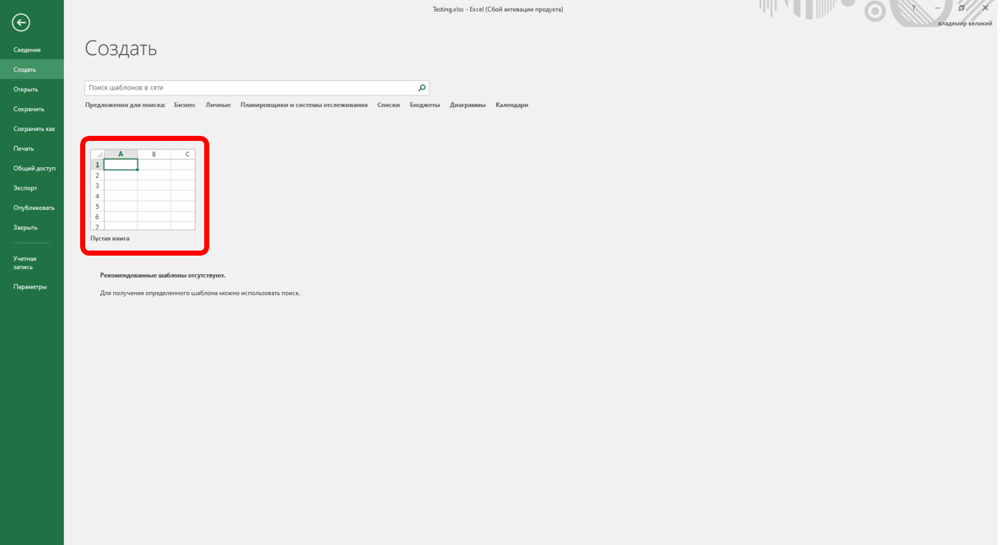
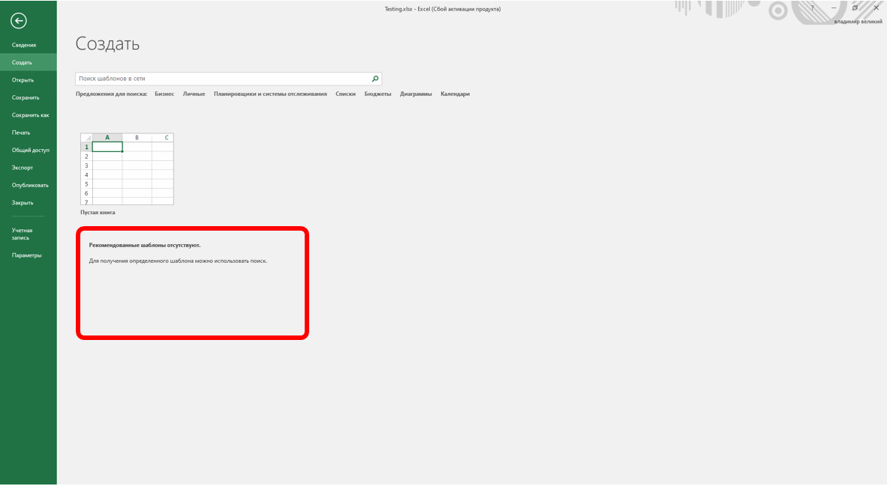
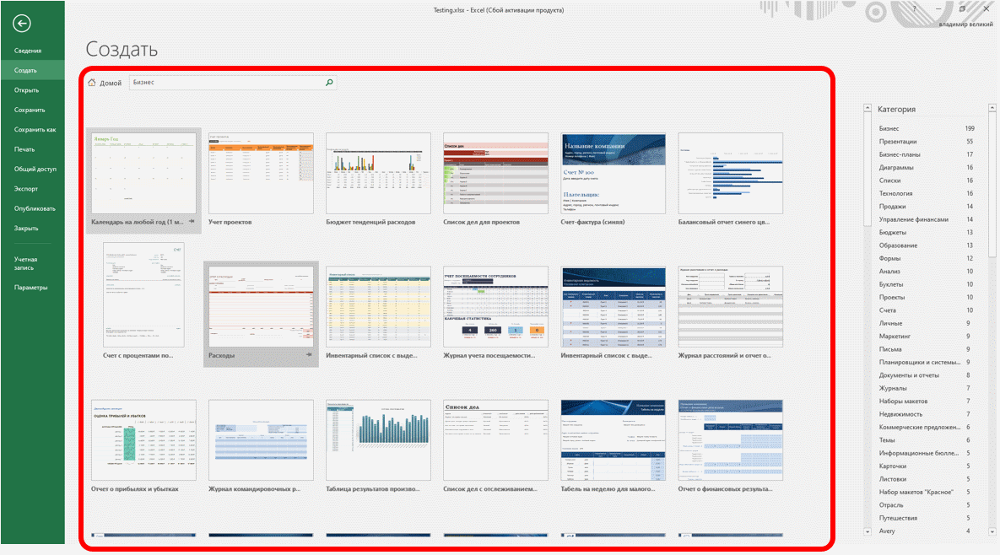
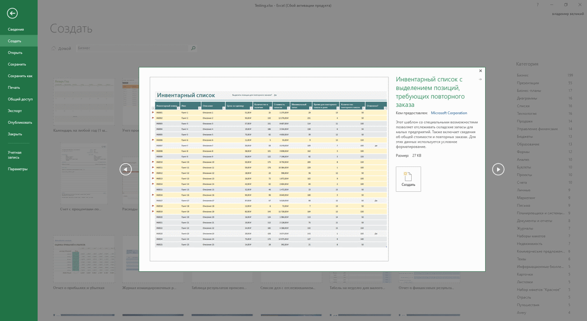

Создание документов
Новый документ создается автоматически сразу после запуска Excel.
Новый пустой документ или документ на основе шаблона можно создать в процессе работы.

Рис. 2.12. Создание нового пустого документа (пустой книги)

Рис. 2.13. Создание документа на основе установленного шаблона

Рис. 2.14. Создание документа на основе шаблона с сайта Microsoft Office Online
При нажатии на шаблон откроется окно с информацией о шаблоне (рис. 2.15). Чтобы создать файл с этим шаблоном, нажмите кнопку Создать.

Рис. 2.15. Окно информации о шаблоне
Сохранение файлов
Сохранение изменений в существующем файле
Для сохранения изменений в существующем файле достаточно нажать кнопку Сохранить панели быстрого доступа.
Сохранение изменений в виде нового файла
Для сохранения нового документа в виде файла или существующего документа в виде нового файла (с другим именем и/или в другой папке) выполните следующие действия.